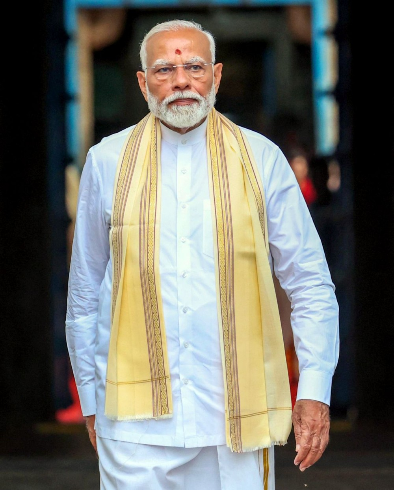

In September 2013, Modi was named the BJP's candidate for prime minister ahead of the 2014 Lok Sabha election. Several BJP leaders,including BJP founding member L. K. Advani who cited concern with leaders who were "concerned with their personal agendas", expressed opposition to Modi's candidature.Modi played a dominant role in the BJP's 2009 general election campaign. Several people who voted for the BJP stated they would have voted for another party if Modi had not been the prime-ministerial candidate.The focus on Modi as an individual was unusual for a BJP election campaign. The election was described as a referendum on Narendra Modi.
Modi was born and raised in Vadnagar in northeastern Gujarat, where he completed his secondary education. He was introduced to the RSS at the age of eight. At the age of 18, he was married to Jashodaben Modi, whom he abandoned soon after, only publicly acknowledging her four decades later when legally required to do so. Modi became a full-time worker for the RSS in Gujarat in 1971. The RSS assigned him to the BJP in 1985 and he rose through the party hierarchy, becoming general secretary in 1998. In 2001, Modi was appointed Chief Minister of Gujarat and elected to the legislative assembly soon after. His administration is considered complicit in the 2002 Gujarat riots, and has been criticised for its management of the crisis. According to official records, a little over 1,000 people were killed, three-quarters of whom were Muslim; independent sources estimated 2,000 deaths, mostly Muslim.A Special Investigation Team appointed by the Supreme Court of India in 2012 found no evidence to initiate prosecution proceedings against him.While his policies as chief minister were credited for encouraging economic growth, his administration was criticised for failing to significantly improve health, poverty and education indices in the state.
In June 1975, Prime Minister Indira Gandhi declared a state of emergency in India that lasted until 1977. During this period, known as "the Emergency", many of her political opponents were jailed and opposition groups were banned. Modi was appointed general secretary of the "Gujarat Lok Sangharsh Samiti", an RSS committee coordinating opposition to the Emergency in Gujarat. Shortly afterwards, the RSS was banned.Modi was forced to go underground in Gujarat and frequently travelled in disguise to avoid arrest, once dressing as a monk and once as a Sikh. He became involved in the printing of pamphlets opposing the government, sending them to Delhi and organising demonstrations. He was also involved with creating a network of safe houses for individuals who were wanted by the government, and in raising funds for political refugees and activists.During this period, Modi wrote a Gujarati-language book titled Sangharsh Ma Gujarat (In the Struggles of Gujarat), which describes events during the Emergency. While in this role, Modi met trade unionist and socialist activist George Fernandes and several other national political figures.
In 2001, Keshubhai Patel's health was failing, and the BJP lost a few state assembly seats in by-elections. Allegations of abuse of power, corruption and poor administration were made, and Patel's standing had been damaged by his administration's handling of the earthquake in Bhuj in 2001.[110][112][113] The BJP national leadership sought a new candidate for the chief ministership, and Modi, who had expressed misgivings about Patel's administration, was chosen as a replacement.[52] Advani did not want to ostracise Patel and was concerned about Modi's lack of experience in government. Modi declined an offer to become Patel's deputy chief minister, telling Advani and Atal Bihari Vajpayee he was "going to be fully responsible for Gujarat or not at all". On 3 October 2001, Modi replaced Patel as Chief Minister of Gujarat with the responsibility of preparing the BJP for the upcoming December 2002 election.[114] On 7 October, Modi was sworn in[115] and he entered the Gujarat state legislature on 24 February 2002 after winning a by-election in Rajkot II constituency, defeating Ashwin Mehta of the INC
After the Bharatiya Janata Party-led National Democratic Alliance (NDA) won a landslide in the 2014 Lok Sabha election, Modi was sworn in as Prime Minister of India on 26 May 2014, becoming the first Indian PM to be born after the country's independence from the British Empire in 1947.[247] Modi's second term as PM began in 2019 following the NDA's 2019 Lok Sabha election win. On 6 December 2020, he became the fourth-longest-serving Prime Minister of India and the longest-serving non-Congress prime minister.